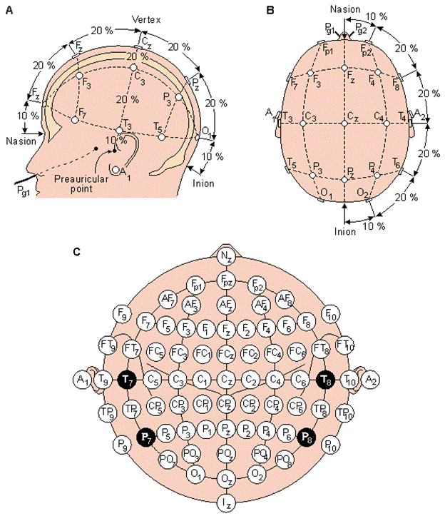
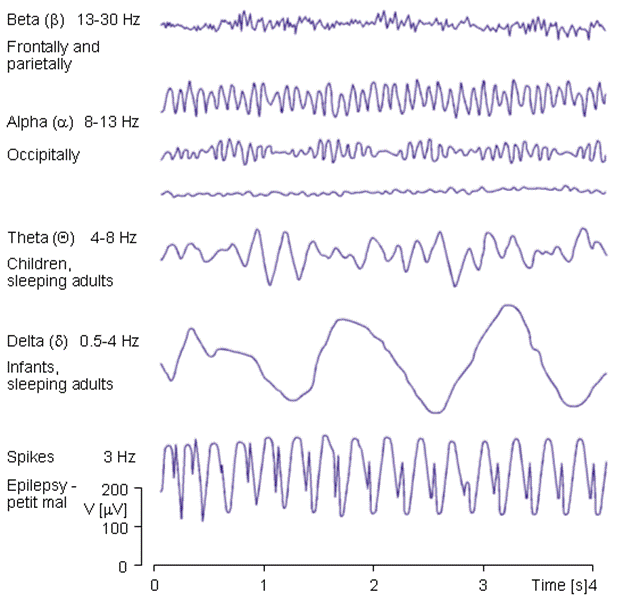
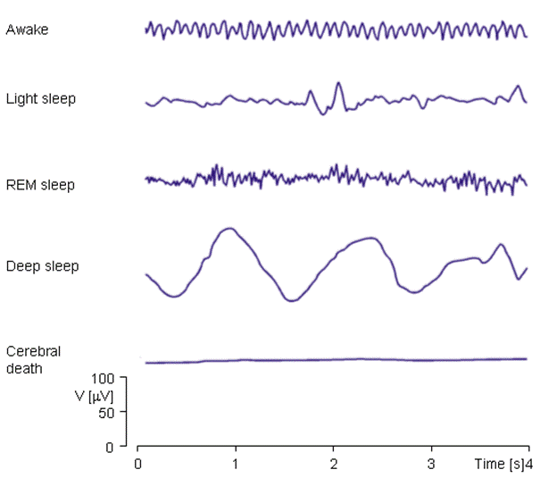

Quy trình sử dụng sóng não – cách thức hoạt động của thiết bị EEG
Nếu tập trung vào một suy nghĩ thì nó sẽ được thể hiện qua sóng não gì:
Trong lĩnh vực nghiên cứu về não học và điện não đồ, có một số sóng não chủ yếu được quan tâm khi người tham gia tập trung vào một suy nghĩ cụ thể. Dưới đây là một số loại sóng não thường được liên kết với việc tập trung hoặc hoạt động tâm trạng cụ thể:
1. Sóng Alpha (8-12 Hz): Sóng alpha thường xuất hiện khi não ở trong trạng thái thư giãn nhưng vẫn tỉnh táo, và thường được liên kết với trạng thái tập trung và thư giãn. Khi một người tập trung vào một suy nghĩ cụ thể, có thể thấy sóng alpha giảm, cho thấy sự tập trung cao.
2. Sóng Beta (12-30 Hz): Sóng beta thường được liên kết với trạng thái hoạt động não cao, bao gồm sự tập trung, cảm xúc và sự tỉnh táo. Khi tập trung vào một suy nghĩ cụ thể, có thể thấy sóng beta tăng lên, đặc biệt là trong các khu vực não liên quan đến việc xử lý thông tin.
3. Sóng Gamma (30-100 Hz): Sóng gamma thường được liên kết với các hoạt động não cao cấp như quá trình học tập, nhớ và giải quyết vấn đề. Khi tập trung vào một suy nghĩ cụ thể hoặc hoạt động tinh thần phức tạp, có thể thấy sóng gamma tăng lên.
4. Sóng Theta (4-8 Hz): Sóng theta thường được liên kết với trạng thái tập trung sâu, tình trạng tưởng tượng và quá trình nhớ. Trong một số trường hợp, sự tập trung vào một suy nghĩ cụ thể có thể kích thích sóng theta.
5. Sóng Delta (dưới 4 Hz): Sóng delta thường xuất hiện trong trạng thái ngủ sâu và khôi phục năng lượng. Trong một số trường hợp đặc biệt, sự tập trung sâu vào một suy nghĩ cụ thể có thể dẫn đến xuất hiện sóng delta trong điện não đồ.
Các điểm cực trên đầu

Hệ thống quốc tế 10-20 được nhìn từ A (bên trái) và B (phía trên đầu). A= dái tai, C= trung tâm, Pg=mũi hầu, P= đỉnh, F=trán, Fp= đỉnh trán, O=chẩm.
(C) Vị trí và tên gọi của 10% các điện cực trung cấp chuẩn hoá bởi tổ chức ghi điện não Hoa Kỳ (Trích từ Sharbrough, 1991).
Các tác động của tín hiệu EEG
Từ tín hiêu EEG có thể phân biệt thành các sóng khác nhau alpha (α), beta (β), delta (δ), và theta (Θ) cũng như các đỉnh kết hợp với bệnh động kinh. Một số ví dụ về các dạng sóng được biểu diễn trên hình 6.
Sóng alpha có tần số từ 8-13 Hz và có thể được đo từ vùng chẩm của người đang thức nhưng nhắm mắt. Dải tần của sóng Beta là từ 13-30 Hz và có thể phát hiện ở vùng đỉnh và thùy trán. Sóng Delta có dải tần từ 0.5-4 Hz và có thể được phát hiện ở trẻ em dưới 7 tuổi hoặc người lớn đang ngủ. Sóng theta có dải tần từ4-8 Hz và có thể thu được ở trẻ em và người lớn đang ngủ.


Ví dụ về sự khác nhau của đồ thị trong các trạng thái của con người